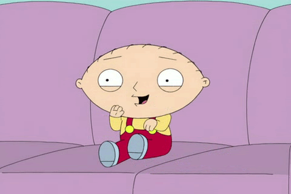

Introduction to the history, theories, current trends, practices, and core media in the digital arts.
202 - Foundations: Audio Theory (3)This course presents the fundamentals of audio theory as applied to the physics and aesthetics of sound.
203 - Foundations: Recording and Sampling (3)This course covers the aesthetics and technical skills required for the recording and sampling of instruments and the human voice.
204 - Foundations: Music Concepts (3)This course covers the study of foundational music concepts, including basic theory, history, genres, and forms.
208 - Audio Production I (3)This course introduces audio production techniques within a digital audio workstation (DAW) environment.
231 - Web Design and Development (3)Theory, technical skills, and design concepts for the creation of standards-compliant web sites. Formerly CTK 301.
232 - Computer Programming for Creatives (3)Text-based, object-oriented, computer programming concepts for areas including interactive design, user interfaces, data visualization, and gaming. Formerly CTK 302.
240 - Sound Design 1: Beginning Digital Audio (3)Introduction to digital audio and aesthetic principles of sound.
260 - Arts Technology Performance Studio (3)Creative and interdisciplinary experiences in solo and ensemble performance integrating computer technology into music, dance, performance art, or theatre production.
Advanced programming methods for the creation of dynamically generated web sites and interactive web applications.
320 - Programming Dynamic Media (3)Programming concepts using a graphical, dataflow environment for media-based performance, interactive installation, and generative art/sound.
330 - Web Video (3)Students will learn technical skills and concepts for the creation of fictional and documentary video content specifically for delivery on the web.
340 - Sound Design 2: Advanced Digital Audio (3)Advanced digital audio and aesthetic principles of sound.
345 - Sequencing And Digital Audio (3)Study of music synthesis through MIDI sequencers, digital sound editing and recording, and the integration of digital audio and MIDI.
351 - Game Design I (3)This foundational game design class explores concepts and frameworks for understanding and designing for engagement, fun, and motivation in games.
354 - User Experience Design for Games (3)This course explores common trends concerning interface design in gaming for understanding how they influence a user s overall experience of a game.
377 - Motion Graphics (3)Create motion graphics with compositing, animation, and visual effects (VFX) for broadcast, web, virtual and augmented reality, with focus on community engagement.